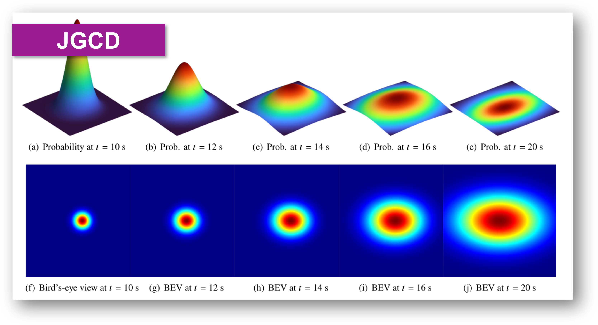

|
Tianzhi Li 李天志
About me
I am a final-year PhD student at Peking University (PKU), working with Professors Zhisheng Duan and Jinzhi Wang. From Dec 2024 to Nov 2025, I was fortunate to work as a visiting PhD at Nanyang Technological University (NTU), Singapore, with Professor François Gay-Balmaz. Prior to that, I received my B.Sc. in Mathematics from Beijing Institute of Technology (BIT) in 2021 under the supervision of Professor Donghua Shi.
Research Interest
My research interest lies at geometric control and learning of robotic and mechanical systems, which includes the following topics:
Geometric Mechanics & Control (especially stochastic & nonholonomic parts)
Physics-Informed Learning (for robotic and mechanical systems)
Structure-Preserving Discretization (variational integrators for ODEs/PDEs)
Geometric Estimation and Filtering (for robot systems & flexible systems)
Selected Research
|
 |
Physics-Informed Gaussian Process Learning on Lie Groups
Tianzhi Li and Jinzhi Wang
Journal of Guidance, Control, and Dynamics, 48 (11), pp. 2654-2662, 2025.
[Paper Link]
We introduce a physics-informed Gaussian process learning method for mechanical systems on Lie groups and on a special class of homogeneous manifolds based on discrete mechanics theory.
|
News
Visitors
|